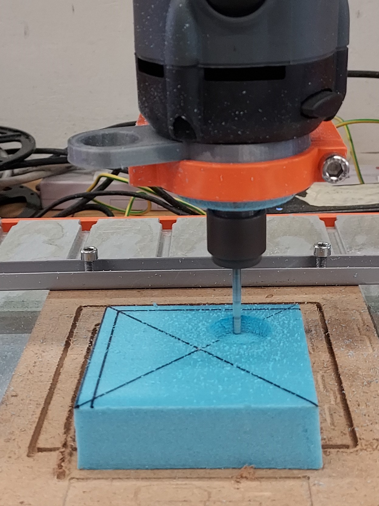
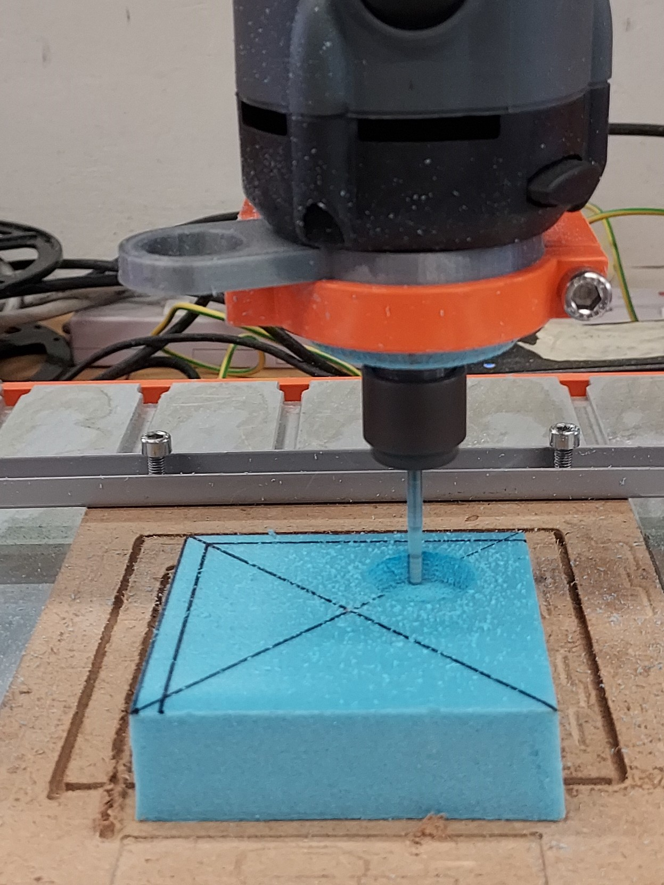

Topics Covered
Introduction
We are going to be learning how to design and fabricate our own mold and later on use that same mold to cast our model.
We would be using rigid foam to create the mold, then using silicone to create the final mold and finally casting with epoxy.
Rigid Foam Mold
While thinking of a design of what I wanted to cast out, I found this 3Dmodel -
My Customized Rock Climbing Hold by riggsbie on Thingiverse.
I converted the .stl file into a .f3d file. I then used this model to create my mold.
I started with the general frame for my mold based on the foam size. In this case was 25mm x 70mm x 70mm. I then included the rock hold model.
I then proceeded to create the g.code for this with Fusion 360's Manufacture Workspace. I used this tool.
This is my Rock Hold Mold g-code. This is how my tool-path looked like.
Using the Stepcraft 420, I milled out my rigid foam mold.
 

I cleaned out the mold, and this is the final product.
Silicone Mold
Using the rigid foam mold, I casted a silicon mold with Silicon Rubber RTV-620 which has a ratio of 1:1. First mix the 2 parts togeter qually and evenly, this allows for proper curing if not the silicone would not cure and solidify.

As this silicone takes some time to cure, I waited till the next week to start the next process. When I was demolding I found it hard to demold but after abit of pulling here and there I managed to demold the silicone mold.
Resin Cast
To create the final model, we would be using Smooth On-Smooth Cast 300. This resin is initially clear but once it cures it turns white. First we prepared the 1:1 ratio of both parts. As this only has a working time of 5-10 mins we need to work fast. After mixing we would have to immediately pour it into the silicone mold.
As this resin is fast curing, after 15 mins or so, it is already hardened and ready to demold.
To finish off the rock climbing hold look, I added a socket head screw as well as a nut at the back.